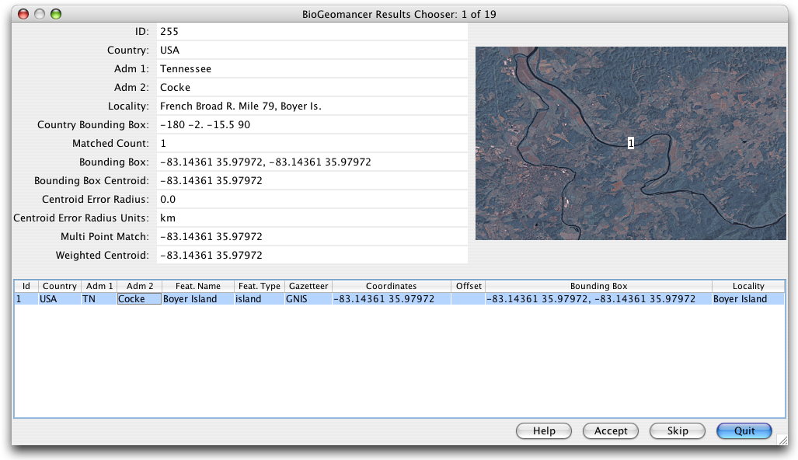

The WorkBench uses the BioGeomancer web service to calculate the latitude and longitude positions from a textual locality description and three geography fields. The WorkBench processes all the selected rows and caches the information, enabling the results to be stepped through one row at a time and the appropriate Latitude / Longitude can be selected, or skipped. For more information about the BioGeomancer tool visit their Web Site: www.biogeomancer.org
Notes:
The BioGeomancer tool uses the data present in the Locality Name, Country, State and County fields to query the BioGeomancer service. These fields must contain data in order for the service to work. The Latitude 1 and Longitude 1 fields may contain data or be empty. If BioGeomancer is able to obtain results for any of the records, a dialog is presented, displaying results for each Data Set record one at a time. The BioGeomancer Results Chooser dialog displays the number of records with results in the title bar.

BioGeomancer Results Chooser
The BioGeomancer Results Chooser dialog allows the results to be viewed through the BioGeomancer's web service and selected.
The upper left portion of the dialog (ID, Country, Adm 1 or State, Adm 2 or County and Locality) displays the details about the query sent to BioGeomancer from the Data Set.
The map displays a graphical representation of the result(s) using a pair of map servers, one hosted by NASA and one hosted at the University of Kansas.
The lower portion of the dialog displays the resulting matches returned by BioGeomancer. Often, if the locality description is specific enough, BioGeomancer will provide only one result. At times, the service provides numerous results.
To choose a result, select the row that corresponds with the correct coordinates of the Data Set record from the lower table.
To deselect an already selected row, either select a different row or hold the Control key while clicking on the currently selected row. Deselecting all rows and clicking “Done” can be used to dismiss the dialog without making any changes to the data or accept only those changes made so far.
The buttons at the bottom of the dialog offer the following functionality:
| Help | Opens the WorkBench Help Window |
| Accept | Stores the latitude and longitude values in the appropriate cells of the record corresponding to the query. |
| Skip | Ignores all results obtained for a given record, and displays the results for the next record. |
| Done | Accepts the currently selected row and closes the BioGeomancer Results Chooser dialog. |
Once all the records have been displayed, the dialog will close. Results that were accepted will be written in the latitude and longitude columns of the record. Be aware that if these fields already contain data BioGeomancer will overwrite the existing fields with the BioGeomancer results.
The WorkBench also stores all ancillary metadata returned by BioGeomancer in the following fields:
These fields are not viewable in the Data Set but are stored for later inclusion into the record when importing into Specify 6.